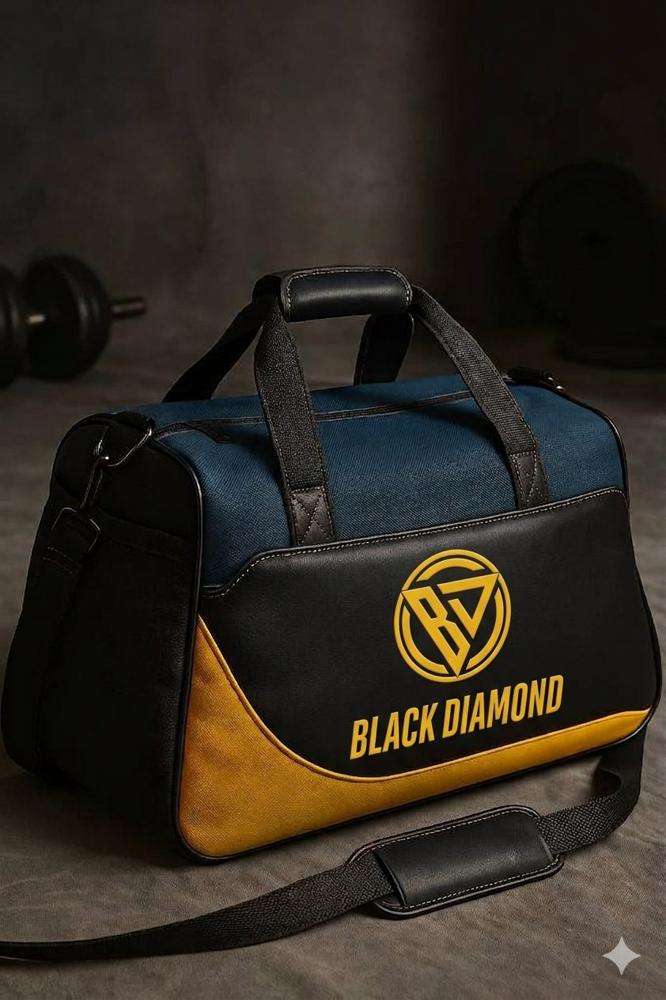

VMK-PER-002 · Sob encomenda

Horizonte. Resistência. Movimento. Inspirada nas tradicionais malas de lona de viajantes e marinheiros, a OLYMPUS traduz o espírito das grandes jornadas para uma linguagem moderna e esportiva. Robusta e funcional, combina a autenticidade da lona com o design contemporâneo da VMORDEKAI®, feita para acompanhar treinos, viagens e todos os caminhos de quem vive em movimento. Possui 4 bolsos e estojo.